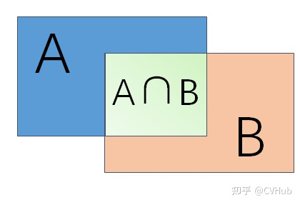
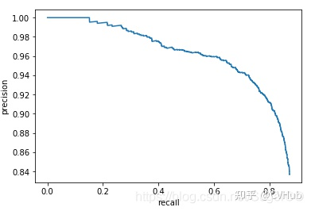
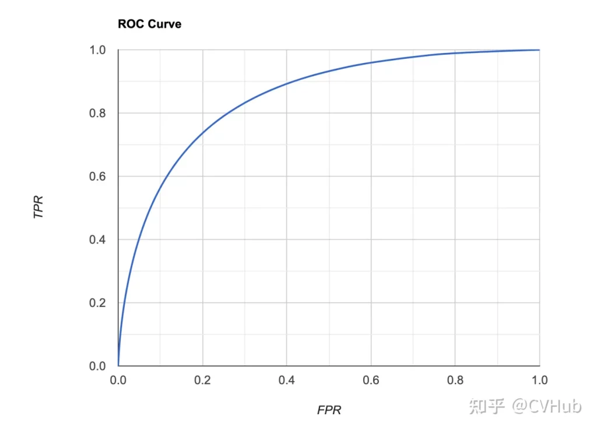
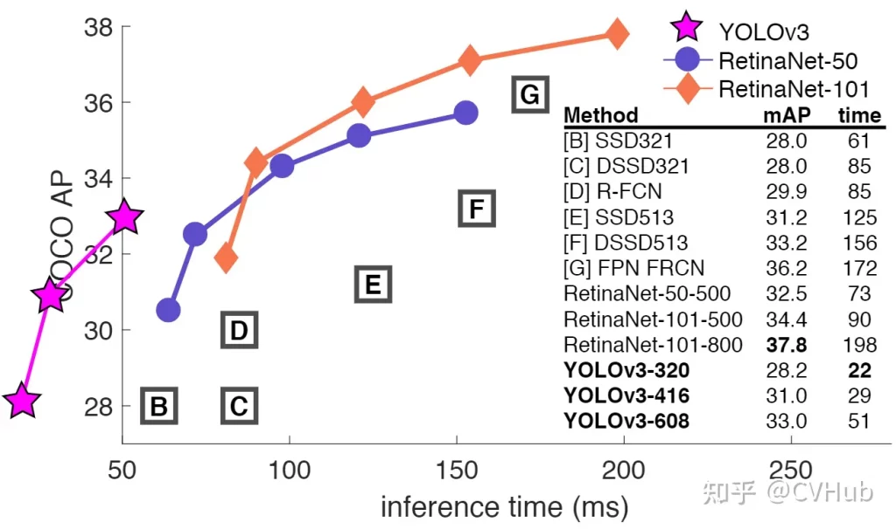

图像目标检测基本概念与算法
目标检测任务概述
机器视觉的中心任务是从图像中解析出可供计算机理解的信息。根据后续任务的需求，可将其分为四个主要层次：分类（Classification）、定位（Location）、检测（Detection）、分割（Segmentation）必读！计算机视觉四大基本任务(分类、定位、检测、分割) (qq.com)。

分类任务关心图像整体，给出整张图像的内容描述即可，而检测则关心特定物体目标，要求同时获得目标类别信息和位置信息。

发展沿革

目标检测究竟发展到了什么程度？| 目标检测发展22年 - 知乎 (zhihu.com)
阶段一：传统目标检测方法
传统检测算法流程可概括如下：
- 选取感兴趣区域，选取可能包含物体的区域
- 对可能包含物体的区域进行特征提取
- 对提取的特征进行检测分类

较为知名的传统方法有：Viola Jones Detectors、HOG Detector、Deformable Part-based Model (DPM)[目标检测的传统方法概述 - 腾讯云开发者社区-腾讯云 (tencent.com)](https://cloud.tencent.com/developer/article/1486379。
具体介绍参见参考资料。
阶段二：深度学习方法
基于手工提取特征的传统目标检测算法进展缓慢，性能低下。直到2012年卷积神经网络(Convolutional Neural Networks, CNNs)的兴起将目标检测领域推向了新的台阶。基于CNNs的目标检测算法主要有两条技术发展路线：anchor-based和anchor-free方法，而anchor-based方法则包括一阶段和二阶段检测算法(二阶段目标检测算法一般比一阶段精度要高，但一阶段检测算法速度会更快)。
Two-stage目标检测算法
二阶段检测算法主要分为以下两个阶段
Stage1：从图像中生成region proposals
Stage2：从region proposals生成最终的物体边框。
重要的算法有：RCNN、SONET、Fast RCNN、Faster RCNN、FPN、Cascade RCNN
one-stage目标检测算法
一阶段目标检测算法不需要region proposal阶段，直接产生物体的类别概率和位置坐标值，经过一个阶段即可直接得到最终的检测结果，因此有着更快的检测速度。
重要的算法有：YOLO v1、SSD、YOLO v2、RetinaNet、YOLO v3、YOLO v4、YOLO V5
Anchor-Free中的目标检测算法
基于Anchor的物体检测问题通常被建模成对一些候选区域进行分类和回归的问题，在一阶段检测器中，这些候选区域就是通过滑窗方式产生Anchor box，而在二阶段检测器中，候选区域是RPN生成的Proposal，但是RPN本身仍然是对滑窗方式产生的Anchor进行分类和回归。基于Anchor的检测算法由于Anchor太多导致计算复杂，及其所带来的大量超参数都会影响模型性能。近年的Anchor free技术则摒弃Anchor，通过确定关键点的方式来完成检测，大大减少了网络超参数的数量。
重要的算法有：CornerNet、CenterNet、FSAF、FCOS、SAPD
评价指标
交并比IOU

准确率/精度/召回率/F1值/FPR
True positives (TP,真正): 预测为正,实际为正
True negatives (TN,真负): 预测为负,实际为负
False positives(FP,假正): 预测为正,实际为负
False negatives(FN,假负): 预测为负,实际为正
PR曲线-AP值
模型精度，召回率，FPR和F1-Score值无法往往不能直观反应模型性能，因此就有了PR曲线-AP值 和 ROC曲线-AUC值。
PR曲线就是Precision和Recall的曲线，我们以Precision作为纵坐标，Recall为横坐标，可绘制PR曲线。

评估标准：如果模型的精度越高，且召回率越高，那么模型的性能自然也就越好，反映在PR曲线上就是PR曲线下面的面积越大，模型性能越好。我们将PR曲线下的面积定义为AP(Average Precision)值，反映在AP值上就是AP值越大，说明模型的平均准确率越高。
ROC曲线-AUC值
ROC曲线就是RPR和TPR的曲线，我们以FPR为横坐标，TPR为纵坐标，可绘制ROC曲线。

评估标准：当TPR越大，FPR越小时，说明模型分类结果是越好的，反映在ROC曲线上就是ROC曲线下面的面积越大，模型性能越好。我们将ROC曲线下的面积定义为AUC(Area Under Curve)值，反映在AUC值上就是AUC值越大，说明模型对正样本分类的结果越好。
mAP
Mean Average Precision(mAP)是平均精度均值，具体指的是不同召回率下的精度均值。在目标检测中，一个模型通常会检测很多种物体，那么每一类都能绘制一个PR曲线，进而计算出一个AP值，而多个类别的AP值的平均就是mAP。
评估标准：mAP衡量的是模型在所有类别上的好坏，属于目标检测中一个最为重要的指标，一般看论文或者评估一个目标检测模型，都会看这个值，这个值(0-1范围区间)越大越好。
划重点！！！一般来说mAP是针对整个数据集而言的，AP则针对数据集中某一个类别而言的，而percision和recall针对单张图片某一类别的。
FPS
Frame Per Second(FPS)指的是模型一秒钟能检测图片的数量，不同的检测模型往往会有不同的mAP和检测速度。

目标检测技术的很多实际应用在准确度和速度上都有很高的要求，如果不计速度性能指标，只注重准确度表现的突破，其代价是更高的计算复杂度和更多内存需求，对于行业部署而言，可扩展性仍是一个悬而未决的问题。因此在实际问题中，通常需要综合考虑mAP和检测速度等因素。